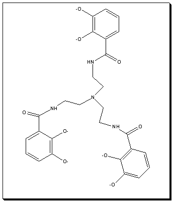

|
|
More Information on the the [Fe(TRENCAM)]3- IonThe [FeTRENCAM]3- Ion (displayed with localized multiple bonds rather than delocalized bonds) is shown on your left. The three catecholyamide chelate rings are capped with a tris(aminoethane)amine molecular subunit creating a single hexadenate ligand that wraps around the Fe(III) metal center. When it binds to the metal, loss of six protons results in a ligand with -6 charge. The overall charge on the complex is -3.  Reference for the Fe(TRENCAM)3- Structure: (CCDC Reference: SUCCUO) T.D.P Stack, T.B. Karpishin, K.N.Raymond, J. Am. Chem. Soc. 114, 1992 p. 1512. Other References: T.J. McMurry, M.W. Hosseini, T.M. Garrett, F.E. Hahn, Z.E. Reyes, K.N.Raymond, J. Am. Chem. Soc. 109, 1987 p. 7196., T.M. Garrett, T.J. McMurry, M.W. Hosseini, Z.E. Reyes, F.E. Hahn, K.N.Raymond, J. Am. Chem. Soc. 113, 1991 p. 2965. |
Resources developed by Marion E. Cass, Carleton College and updated in 2025 Computations and content done in consultation with Henry S. Rzepa, Imperial College, London